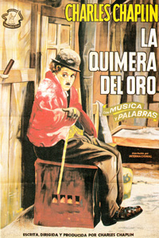

La quimera del oro
El inhóspito territorio de Klondike, en Alaska atrajo a muchos hombres que tenían un sueño, el oro debiendo atravesar para llegar al mismo el complicado paso Chilkoot en el que muchos perdieron la vida y otros abandonaron.
Es 1898, y entre los que continuaron se encontraba un solitario hombrecillo que se adentró en el desierto helado sin percatarse de que era seguido por un oso.
Una terrible tormenta obliga al hombrecillo a buscar refugio en una cabaña sin saber que en esta se encuentra Black Larsen, un fugitivo de la justicia que trata, sin éxito de expulsar al hombrecillo.
Y poco después llega también a la cabaña Big Jim, un buscador de oro que, tras encontrar un filón debe refugiarse de la terrible tormenta.
Larsen trata de echarlos, pero Jim es más fuerte y no lo consigue, por lo que deberán compartir la cabaña durante varios días sin que la tormenta amaine, por lo que comienzan a pasar un hambre terrible, por lo que deciden que alguno de ellos deberá salir a buscar comida, jugándoselo a las cartas, debiendo ser Larsen quien salga.
Este se topa con dos policías que le buscan, y sorprendiéndolos acaba con ellos, llevándose su trineo con sus provisiones.
Entretanto, en la cabaña, el hombrecillo y Jim deben pasar el día de Acción de Gracias comiéndose un zapato de aquel hervido.
Pero el hambre arrecia y Big Jim comienza a delirar, imaginándose que su acompañante es un pavo, decidiendo a partir de ese momento que debe comérselo, debiendo el hombrecillo defenderse del gigante, no pudiendo casi ni dormir.
Un día mientras trata de defenderse de Big Jim se cuela un oso en su cabaña. Y después del susto inicial el hombrecillo consigue dispararle y matarlo, solucionándose de ese modo su problema.
Acabada la tormenta cada uno decide seguir su camino, encontrándose Big Jim al llegar a su explotación con que en la misma lo espera Larsen tras descubrir el oro. Y cuando lo ve le golpea con una pala antes de marcharse con sus ganancias, aunque poco después morirá víctima de un corrimiento de tierras.
El hombrecillo llega por su parte hasta la ciudad surgida al calor del oro, yendo al salón de baile donde de inmediato se fija en Georgia, una bella muchacha que discute constantemente con su novio, el fanfarrón Jack, y el hombrecillo, que hasta ese momento era solo un hombre invisible para ella es el elegido para tratar de darle celos a Jack y para demostrarle su desprecio.
Durante el baile él debe sujetarse constantemente los pantalones primero con la mano, luego con el bastón, y finalmente con una cuerda que encuentra con la que se los ata sin fijarse que al otro extremo de la misma está un perro atado, el cual al perseguir a un gato arrastra al hombrecillo ante las risas de todos los del salón.
Tras el baile Georgia discute nuevamente con Jack, que no está dispuesto a permitírselo, por lo que decide ir a buscarla, interponiéndose en su camino el hombrecillo, que no es nadie para el forzudo Jack, que le encasqueta el sombrero.
Sin ver nada, este golpea una columna que cree es Jack, provocando que caiga un reloj sobre este, que queda inconsciente, creyendo tras lograr quitarse el sombrero de los ojos que fue su golpe el que lo derribó.
Una vez fuera del salón y al llegar a la puerta de Hank Curtis, un ingeniero bondadoso que hace expediciones al Gran Norte, tumbándose el hombrecillo frente a su cabaña logrando así el auxilio de Hank, que le da de comer y además le deja al cargo de su cabaña mientras él se marcha a una de sus expediciones.
Muy cerca de allí juegan Georgia y sus amigas con la nieve, acabando por impactar sus bolas en la puerta de la cabaña. Y cuando abre se encuentra frente a la misma con la mujer de sus sueños, agradecida por lo que hizo por ella y que descubre que él guarda una foto de ella que rompió Jack y que él recogió en el salón, dándose cuenta de que está enamorado de ella, lo que provoca la risa y la burla de ella y sus amigas que le prometen que volverán en Noche Vieja para cenar con él.
Durante los días siguientes se dedica a ganar dinero despejando las puertas de algunos establecimientos para poder preparar la gran cena.
Y llegado el día indicado la cena es un éxito y él las hace reír mientras hace bailar con sus tenedores a dos trozos de pan, aunque se despertará para darse cuenta de que es solo un sueño, pues ellas no aparecen, ya que están divirtiéndose en el salón.
Y de pronto Georgia se acuerda del hombrecillo y decide ir con Jack y con sus amigas a visitarlo para burlarse de él, aunque ya no lo encuentran allí, pues él salió hacia el pueblo. Pero ella al entrar y ver la casa adornada para la Navidad y la mesa preparada con un regalo para ella siente remordimientos.
Entretanto llega hasta la ciudad Big Jim, al que le falla la memoria debido al golpe de Larsen. Tiene una montaña de oro, pero no sabe cómo llegar a ella, por lo que se alegra enormemente cuando encuentra allí al hombrecillo, ahora contento debido a que le entregan una nota de Georgia disculpándose por no haber acudido a la cena.
Partirá con Big Jim hacia la cabaña, donde pasarán la noche, sin darse cuenta de que mientras dormían la fuerza de la tormenta desplazó su casa al borde de un precipicio, por lo que cuando se despierta, el hombrecillo, aun resacoso cree que el que la casa se mueva es efecto del alcohol, descubriendo muy pronto lo que ocurre, logrando salir de ella justo antes de que esta se despeñe, aunque al susto de haberse quedado sin casa le sigue la alegría de que esta estaba justo frente a la mina de Jim.
Big Jim y el hombrecillo son ahora dos millonarios que regresan en los camarotes de lujo de un barco a su país, siendo objeto su hazaña de la curiosidad de los periodistas, que los entrevistan, pidiéndole al hombrecillo que se vista de nuevo con el traje de vagabundo para ilustrar el reportaje.
Y en el mismo barco, aunque en el puente, viaja también Georgia, que oye hablar a los policías del barco de la existencia de un polizón.
Vestido con sus viejas ropas, el hombrecillo se cae, yendo a parar junto a Georgia, que, creyendo que es el polizón trata de ocultarlo e incluso cuando lo descubren se ofrece a pagar su pasaje.
Llegan entonces los periodistas y los asistentes del hombrecillo que aclaran el asunto, estando feliz aquel de haberse reencontrado con Georgia, que ahora viajará feliz con él.